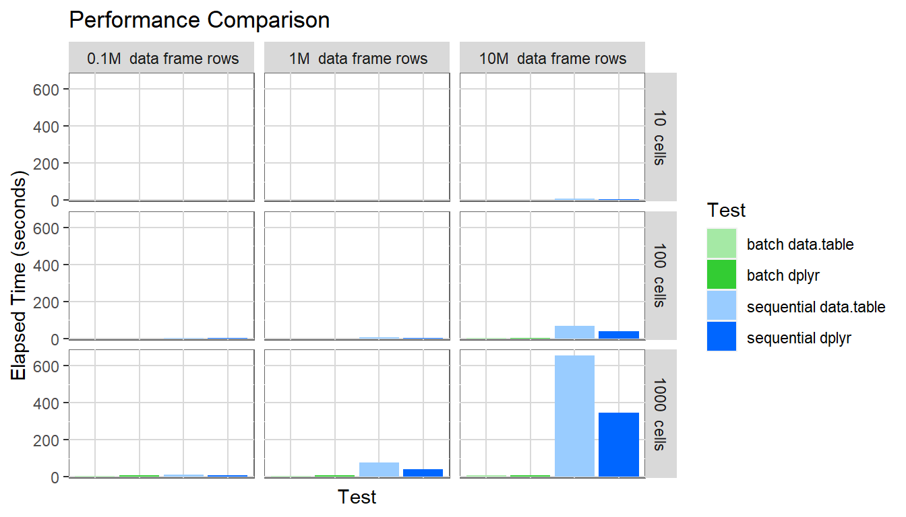
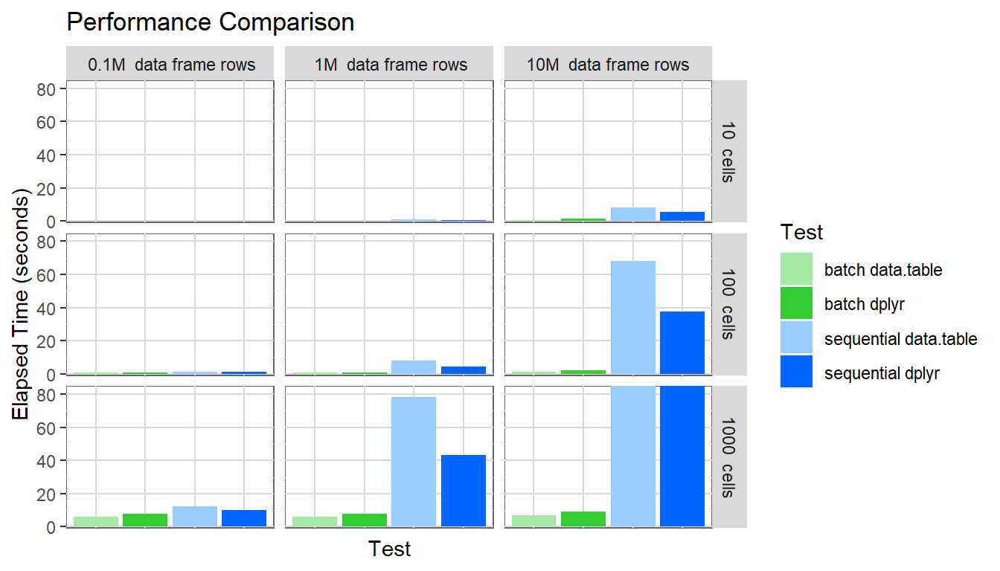
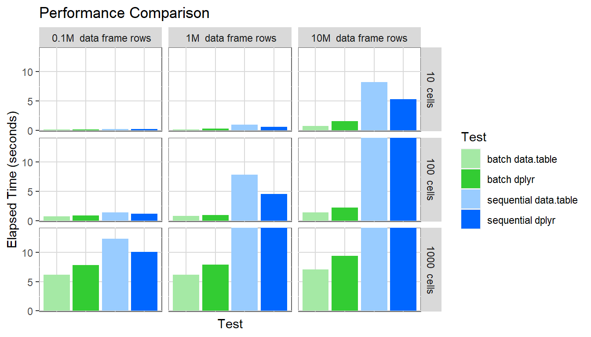

This vignette provides some information about the different factors that influence the performance of the pivottabler package and some recommendations for reducing the time taken to construct pivot tables. The vignette is relatively long. For the key recommendations simply skip to the end of the vignette.
Before getting into the detail, it is helpful to define some the meaning of some terms that will be used in this vignette.
pivottabler commands, i.e. from pt <- PivotTable$new() to pt$renderPivot() inclusive.There are many activities involved in constructing a pivot table, so the performance metric described above is a simplification that provides a basic means of performance comparison.
The time taken for each of the main activities involved in constructing a pivot table is captured within the pivot table as it is constructed. The timings can be retrieved using either the allTimings or significantTimings properties. significantTimings returns the times for only those activities that required more than 0.1 seconds.
For example, for the most common pivot table used throughout these vignettes:
library(pivottabler) pt <- PivotTable$new() pt$addData(bhmtrains) pt$addColumnDataGroups("TrainCategory") pt$addRowDataGroups("TOC") pt$defineCalculation(calculationName="TotalTrains", summariseExpression="n()") pt$renderPivot()
pt$allTimings
## action user system elapsed
## 1 addData(bhmtrains) 0.05 0 0.04
## 2 addColumnDataGroups(TrainCategory) 0.15 0 0.16
## 3 addRowDataGroups(TOC) 0.05 0 0.05
## 4 defineCalculation(default:TotalTrains) 0.00 0 0.00
## 5 normaliseColumnGroups 0.01 0 0.02
## 6 normaliseRowGroups 0.00 0 0.00
## 7 generateCellStructure 0.13 0 0.12
## 8 evaluateCells:setWorkingData 0.19 0 0.19
## 9 evaluateCells:generateBatchesForCellEvaluation 0.23 0 0.23
## 10 evaluateCells:evaluateBatches 0.02 0 0.02
## 11 evaluateCells:evaluateCell 0.53 0 0.53
## 12 evaluateCells:total 0.98 0 0.99
## 13 getCss 0.00 0 0.00
## 14 getHtml 0.28 0 0.28pt$significantTimings
## action user system elapsed
## 2 addColumnDataGroups(TrainCategory) 0.15 0 0.16
## 7 generateCellStructure 0.13 0 0.12
## 8 evaluateCells:setWorkingData 0.19 0 0.19
## 9 evaluateCells:generateBatchesForCellEvaluation 0.23 0 0.23
## 11 evaluateCells:evaluateCell 0.53 0 0.53
## 12 evaluateCells:total 0.98 0 0.99
## 14 getHtml 0.28 0 0.28Several different factors influence pivottabler performance. In descending order of significance:
sequential or batch
dplyr or data.table
Each of these factors is described in the following sections. A performance comparison is made later in the vignette that provides example performance metrics for each of the above.
The pivottabler package allows pivot tables to be built in a flexible way - i.e. a pivot table is built up step-by-step by specifying one variable at a time to add to either the row or column headings. Irregular layouts are supported where a given level of row or column headings can relate to more than one variable. Once the headings have been defined the cells are generated and their values computed.
pivottabler supports two different approaches for calculating cell values: sequential and batch. The evaluation mode is specified in the pivot table initialiser:
library(pivottabler) pt <- PivotTable$new(evaluationMode="sequential") # or pt <- PivotTable$new(evaluationMode="batch") # the default # ...
All past versions of the pivottabler package supported sequential evaluation mode. It was the only evaluation algorithm in versions 0.1.0 and 0.2.0 of the pivottabler package.
In sequential evaluation mode, the value of each cell is calculated one-cell-at-a-time. The source data frame is filtered to match the context of a particular cell and then the calculation performed. If there are 1000 cells in the pivot table, then the source data frame is filtered 1000 times (or potentially even more, depending on the type of calculation). Unsurprisingly, for large pivot tables (and especially large pivot tables based on large data frames), the pivot table creation time is typically large.
The batch evaluation mode was introduced in version 0.3.0 of the pivottabler package. Since version 0.3.0 batch has also been the default evaluation mode.
In batch evaluation mode, the cells are grouped into batches, based on the variables filtered in each cell. One calculation is then performed for each batch, i.e. if a batch relates to 500 cells, then one calculation will cover all 500 cells. The ‘batch’ evaluation mode performs significantly better than the sequential evaluation mode.
Returning to the example pivot table, we can display the batch information as a message using showBatchInfo() or simply retrieve it as a character variable using the batchInfo property of the pivot table:
library(pivottabler) pt <- PivotTable$new() pt$addData(bhmtrains) pt$addColumnDataGroups("TrainCategory") pt$addRowDataGroups("TOC") pt$defineCalculation(calculationName="TotalTrains", summariseExpression="n()") pt$renderPivot()
pt$showBatchInfo()
BATCH INFO:
BATCH 1: DATA: bhmtrains, 2 VARS: [TOC, TrainCategory], 1 CALC: [default:TotalTrains] => 8 CELL CALCS, RESULTS: 7 row(s) x 3 col(s), COL NAMES: TOC, TrainCategory, calc000001
BATCH 2: DATA: bhmtrains, 1 VAR: [TOC], 1 CALC: [default:TotalTrains] => 4 CELL CALCS, RESULTS: 4 row(s) x 2 col(s), COL NAMES: TOC, calc000001
BATCH 3: DATA: bhmtrains, 1 VAR: [TrainCategory], 1 CALC: [default:TotalTrains] => 2 CELL CALCS, RESULTS: 2 row(s) x 2 col(s), COL NAMES: TrainCategory, calc000001
BATCH 4: DATA: bhmtrains, 0 VARS: [], 1 CALC: [default:TotalTrains] => 1 CELL CALC, RESULTS: (not evaluated)
CALC SUMMARY:
default:TotalTrains: compatible%=100%, compatible=15, incompatible=0, noData=0, total=15For each batch, the above shows:
The specific batch (or batches) for each cell can be displayed by showing the working data, the first bullet point of which specifies the related batch. The following pivot table is the same pivot table as above with highlight colours added to show the different batches:
library(pivottabler) pt <- PivotTable$new() pt$addData(bhmtrains) pt$addColumnDataGroups("TrainCategory") pt$addRowDataGroups("TOC") pt$defineCalculation(calculationName="TotalTrains", summariseExpression="n()") pt$evaluatePivot() highlight1 <- PivotStyle$new(pt, "cellHighlight", list("background-color"="#FFFF00")) highlight2 <- PivotStyle$new(pt, "cellHighlight", list("background-color"="#00FFFF")) highlight3 <- PivotStyle$new(pt, "cellHighlight", list("background-color"="#00FF00")) highlight4 <- PivotStyle$new(pt, "cellHighlight", list("background-color"="#FF00FF")) cells1 <- pt$getCells(specifyCellsAsList=TRUE, cellCoordinates=list(c(1, 1), c(1, 2), c(2, 1), c(2, 2), c(3, 1), c(3, 2), c(4, 1), c(4, 2))) cells2 <- pt$getCells(specifyCellsAsList=TRUE, cellCoordinates=list(c(1, 3), c(2, 3), c(3, 3), c(4, 3))) cells3 <- pt$getCells(specifyCellsAsList=TRUE, cellCoordinates=list(c(5, 1), c(5, 2))) cells4 <- pt$getCells(specifyCellsAsList=TRUE, cellCoordinates=list(c(5, 3))) lst <- lapply(cells1, function(cell) {cell$style <- highlight1}) lst <- lapply(cells2, function(cell) {cell$style <- highlight2}) lst <- lapply(cells3, function(cell) {cell$style <- highlight3}) lst <- lapply(cells4, function(cell) {cell$style <- highlight4}) pt$renderPivot(includeWorkingData = TRUE)
pt$showBatchInfo()
BATCH INFO:
BATCH 1: DATA: bhmtrains, 2 VARS: [TOC, TrainCategory], 1 CALC: [default:TotalTrains] => 8 CELL CALCS, RESULTS: 7 row(s) x 3 col(s), COL NAMES: TOC, TrainCategory, calc000001
BATCH 2: DATA: bhmtrains, 1 VAR: [TOC], 1 CALC: [default:TotalTrains] => 4 CELL CALCS, RESULTS: 4 row(s) x 2 col(s), COL NAMES: TOC, calc000001
BATCH 3: DATA: bhmtrains, 1 VAR: [TrainCategory], 1 CALC: [default:TotalTrains] => 2 CELL CALCS, RESULTS: 2 row(s) x 2 col(s), COL NAMES: TrainCategory, calc000001
BATCH 4: DATA: bhmtrains, 0 VARS: [], 1 CALC: [default:TotalTrains] => 1 CELL CALC, RESULTS: (not evaluated)
CALC SUMMARY:
default:TotalTrains: compatible%=100%, compatible=15, incompatible=0, noData=0, total=15For small pivot tables and small data frames both modes will perform adequately, i.e. generate a pivot table in a few seconds or less.
As the data volume grows, batch mode starts to significantly outperform sequential mode. The difference is stark for pivot tables with many cells as the performance comparisons later in this vignette will show.
There are some scenarios where the batch evaluation mode cannot be used. Any batch that relates to only one cell will be skipped and that cell will be calculated using the sequential evaluation mode. For example, in the batch info above, the batch that relates to the grand total cell is described as “(not evaluated)”.
Certain types of calculation aren’t compatible with batch mode, though these calculation types are either less common or typically already relatively fast. More detail on calculation types is provided in the next section.
Another scenario where the batch evaluation mode cannot be used is where the filters for a cell specify multiple specific values for a particular variable, e.g. using R syntax to represent filter conditions: day == "Monday" is compatible with batch mode, but day %in% c("Monday", "Tuesday") is not. An example of such a pivot table can be found in the Data Groups vignette and is reproduced below:
library(pivottabler) pt <- PivotTable$new() pt$addData(bhmtrains) pt$addColumnDataGroups("TrainCategory") pt$addColumnDataGroups("PowerType") pt$addRowDataGroups("TOC", fromData=FALSE, explicitListOfValues=list( "London Midland", "CrossCountry", "Other"=c("Arriva Trains Wales", "Virgin Trains"))) pt$defineCalculation(calculationName="TotalTrains", summariseExpression="n()") pt$evaluatePivot() redStyle <- PivotStyle$new(pt, "redStyle", list("background-color"="#FFC7CE", "color"="#9C0006")) cells <- pt$getCells(specifyCellsAsList=TRUE, rowNumbers=3) lst <- lapply(cells, function(cell) {cell$style <- redStyle}) pt$renderPivot(includeWorkingData = TRUE)
In the above pivot table, row three is not compatible with the batch evaluation mode since row three relates to two train operating companies “Arriva Trains Wales” and “Virgin Trains”. The other rows are batch compatible, so this pivot table will be computed using a mixture of evaluation modes. The sequential evaluation mode is a fallback when the batch mode cannot be used.
The Calculations vignette describes a number of different types of calculation. These can have different performance characteristics:
Summary calculations (method 1) are the most common type of pivot table calculation. Only method 1 calculations use the batch evaluation mode.
The number of cells in the body of a pivot table also strongly influences the pivot table creation time. The pivottabler package maintains a set of data about each cell and each cell must be processed to generate the pivot table, therefore it rather obvious the greater the number of cells the greater the pivot table creation time. The performance comparison below illustrates the effect of pivot table size.
The number of rows in the data frame(s) added to a pivot table also influences pivot table creation time.
When the sequential evaluation mode is used, larger data frames reduce performance and significantly increase pivot table creation time for larger pivot tables.
When the batch evaluation mode is used, data size does not significantly impact performance or pivot table creation time.
The pivottabler package relies on other existing mature data manipulation and aggregation packages when calculating cell values. These packages use logic compiled into C/C++ so perform data manipulation and aggregation very efficiently.
The pivottabler package supports both the dplyr package and (since version 0.3.0) the data.table package. The dplyr package is the default package.
The processing library to use is specified in the pivot table initialiser:
library(pivottabler) pt <- PivotTable$new(processingLibrary="dplyr") # the default # or pt <- PivotTable$new(processingLibrary="data.table") # ...
When using batch evaluation mode, the data.table package typically offers slightly better performance, since it calculates summary values in one step, i.e. filtering and aggregation together, without the need to generate intermediate data frames.
When using sequential evaluation mode, the dplyr package typically offers slightly better performance. This is because in sequential mode, two data.table calculations are needed for each cell. The first to count the number of rows after filtering is applied, in order to determine whether data exists for the cell and if not set the cell value to the no data value/caption. The second is then to perform the actual cell calculation. Without the first calculation, data.table cell calculations involving functions like max() return infinity rather a clear indicator of no data.
The data.table has a few inconsistencies when grouping and aggregating on the same variables. This can cause a pivot table to have inconsistencies e.g. pivot table cells with the wrong values that is most obvious when row or columns totals that don’t equal the sum of the values in the row or column:
library(data.table) library(pivottabler) df <- data.frame(SomeNumber=c(1, 1, 1, 2, 2, 2, 3, 3, 3)) pt <- PivotTable$new(processingLibrary="data.table") pt$addData(df) pt$addRowDataGroups("SomeNumber") pt$defineCalculation(calculationName="SomeNumber", summariseExpression="sum(SomeNumber)", caption="Some Number") pt$evaluatePivot() pt$renderPivot()
As a comparison, this problem does not occur when using dplyr:
library(data.table) library(pivottabler) df <- data.frame(SomeNumber=c(1, 1, 1, 2, 2, 2, 3, 3, 3)) pt <- PivotTable$new(processingLibrary="dplyr") pt$addData(df) pt$addRowDataGroups("SomeNumber") pt$defineCalculation(calculationName="SomeNumber", summariseExpression="sum(SomeNumber)", caption="Some Number") pt$evaluatePivot() pt$renderPivot()
In general, do not group by and aggregate on the same columns. One workaround is to duplicate the column:
library(data.table) library(pivottabler) df <- data.frame(SomeNumberA=c(1, 1, 1, 2, 2, 2, 3, 3, 3), SomeNumberB=c(1, 1, 1, 2, 2, 2, 3, 3, 3)) pt <- PivotTable$new(processingLibrary="data.table") pt$addData(df) pt$addRowDataGroups("SomeNumberA") pt$defineCalculation(calculationName="SomeNumber", summariseExpression="sum(SomeNumberB)", caption="Some Number") pt$evaluatePivot() pt$renderPivot()
The above was raised with the authors/contributors of data.table package under GitHub issue 3103.
The internal code of the pivottabler package checks the values of the argument values specified for each function. This checking provides extra assurance that the argument values are valid and helps to quickly identify when an unexpected/abnormal condition has occurred. However, this checking has some overhead and reduces performance slightly. For small pivot tables the effect of this checking is not significant and not noticeable. For larger pivot tables the overhead can be noticeable, therefore the level of checking used can be controlled. The following argument check levels are supported:
none - no argument checking is performed at all (=no performance overhead),minimal - only checks whether a value has been specified for mandatory arguments,basic - also checks whether a value falls within the allowed range of values (for numerical arguments) or within the list of allowed values (for character arguments),balanced - also checks whether the data types of argument values specified by users of the pivottabler package (i.e. roughly speaking for all functions/methods of the PivotTable class),full - also checks data types for argument values for all internal functions throughout the pivottabler package (=highest performance overhead).The default argument check mode is balanced for release versions of the pivottabler package (i.e. all versions obtained from CRAN and installed with install.packages("pivottabler")) and full for development versions (e.g. versions obtained from GitHub and installed with devtools::install_github("cbailiss/pivottabler")).
The argument check mode can be explicitly specified in the pivot table initialiser, e.g.:
library(pivottabler) pt <- PivotTable$new(argumentCheckMode="none") # ...
Generally speaking, it is recommended to use the default argument check mode of balanced unless generating very large pivot tables when none may offer a small performance benefit. Even then, should an error occur, the first check should be revert to the balanced mode and re-run to see if this provides a clearer indication of the cause of the problem (e.g. if an illegal argument value was specified).
Several other factors can influence performance:
The above factors are mostly fixed by the data and/or pivot table requirements so can’t easily be changed to improve performance.
Here we run a performance comparison for a variety of different scenarios. Tests cover all of the following combinations:
sequential and batch evaluation modes.none and balanced.All of the above combinations are run three times. This equals 72*3=216 tests in total. The full performance comparison typically requires around 3 hours to execute.
This test uses a very simple calculation - a basic row count. More complex calculations will require longer to compute.
The performance comparison script is:
benchmarkScenarios <- function() { iterationCount <- 3 evaluationModes <- c("sequential", "batch") rowCounts <- c(1e5, 1e6, 1e7) cellCounts <- c(10, 100, 1e3) argumentCheckModes <- c("none", "balanced") processingLibraries <- c("dplyr", "data.table") testCount <- length(evaluationModes) * length(rowCounts) * length(cellCounts) * length(argumentCheckModes) * length(processingLibraries) * iterationCount c0 <- 1:testCount c1 <- character(testCount) c2 <- integer(testCount) c3 <- integer(testCount) c4 <- character(testCount) c5 <- character(testCount) c6 <- character(testCount) completed <- logical(testCount) userTime <- numeric(testCount) systemTime <- numeric(testCount) elapsedTime <- numeric(testCount) testCount <- 0 for(i in 1:iterationCount) for(evaluationMode in evaluationModes) for(rowCount in rowCounts) for(cellCount in cellCounts) for(argumentCheckMode in argumentCheckModes) for(processingLibrary in processingLibraries) { testCount <- testCount + 1 c1[testCount] <- evaluationMode c2[testCount] <- rowCount c3[testCount] <- cellCount c4[testCount] <- argumentCheckMode c5[testCount] <- processingLibrary c6[testCount] <- paste0(rowCount, " rows x ", cellCount, " cells ", evaluationMode, " ", processingLibrary, " ", argumentCheckMode) } df <- data.frame(id=c0, evaluationMode=c1, rowCount=c2, cellCount=c3, argumentCheckMode=c4, processingLibrary=c5, description=c6, completed=completed, userTime=userTime, systemTime=systemTime, elapsedTime=elapsedTime, stringsAsFactors=FALSE) return(df) } generateDataFrame <- function(cellCount, rowCount) { a <- 0 b <- 0 repCount <- 0 if(cellCount==10) { a <- 5 b <- 2 } else if(cellCount==100) { a <- 10 b <- 10 } else if(cellCount==1000) { a <- 50 b <- 20 } else if(cellCount==10000) { a <- 100 b <- 100 } else if(cellCount==100000) { a <- 500 b <- 200 } else stop("Invalid cellCount specified.") x <- integer(a * b) y <- integer(a * b) n <- 0 for(i in 1:a) for(j in 1:b) { n <- n + 1 x[n] <- i y[n] <- j } repCount <- ceiling(rowCount / length(x)) x <- rep.int(x, repCount) y <- rep.int(y, repCount) if(length(x)>rowCount) x <- x[1:rowCount] if(length(y)>rowCount) y <- y[1:rowCount] df <- data.frame(x, y) return(df) } scenarios <- benchmarkScenarios() testData <- list() for(s in 1:nrow(scenarios)) { evaluationMode <- scenarios$evaluationMode[s] rowCount <- scenarios$rowCount[s] cellCount <- scenarios$cellCount[s] argumentCheckMode <- scenarios$argumentCheckMode[s] processingLibrary <- scenarios$processingLibrary[s] countFunction <- ifelse(processingLibrary=="data.table", ".N", "n()") description <- scenarios$description[s] message("---------------------------------------------") message(paste("Test ", s, " out of ", nrow(scenarios))) df <- testData[[paste0(cellCount, "-", rowCount)]] if(is.null(df)) { df <- generateDataFrame(cellCount=cellCount, rowCount=rowCount) testData[[paste0(cellCount, "-", rowCount)]] <- df } xmax <- max(df$x) ymax <- max(df$y) if((xmax*ymax)!=cellCount) stop("cellCount error!") message(paste0("Starting ", description)) time <- system.time({ library(pivottabler) pt <- PivotTable$new(processingLibrary=processingLibrary, evaluationMode=evaluationMode, argumentCheckMode=argumentCheckMode) pt$addData(df) pt$addColumnDataGroups("x") pt$addRowDataGroups("y") pt$defineCalculation(calculationName="rowCount", summariseExpression=countFunction) pt$evaluatePivot() html <- pt$getHtml() }) message(paste0("Completed ", description, " in ", round(time["elapsed"], 2), " second(s)")) scenarios$completed[s] <- TRUE scenarios$userTime[s] <- time["user.self"] scenarios$systemTime[s] <- time["sys.self"] scenarios$elapsedTime[s] <- time["elapsed"] write.table(scenarios, file="D:\\R\\benchmark.txt", quote=F, sep="\t", row.names=F) }
A data frame containing the results of these 216 test cases is provided in the pvtperfresults sample data provided with the pivottabler package. These tests were run on a Windows x64 machine containing an Intel i7 2.8GHz CPU.
To summarise the results:
library(dplyr) results <- read.table(file="D:\\R\\benchmark.txt", sep="\t", header=TRUE) scenarios <- results %>% filter(argumentCheckMode=="none") %>% group_by(evaluationMode, rowCount, cellCount, argumentCheckMode, processingLibrary, description) %>% summarise(id=min(id), userTimeAvg=mean(userTime), systemTimeAvg=mean(systemTime), elapsedTimeAvg=mean(elapsedTime), userTimeMin=min(userTime), userTimeMax=max(userTime), systemTimeMin=min(systemTime), systemTimeMax=max(systemTime), elapsedTimeMin=min(elapsedTime), elapsedTimeMax=max(elapsedTime)) %>% select(id, evaluationMode, rowCount, cellCount, argumentCheckMode, processingLibrary, description, userTimeAvg, systemTimeAvg, elapsedTimeAvg, userTimeMin, userTimeMax, systemTimeMin, systemTimeMax, elapsedTimeMin, elapsedTimeMax) %>% ungroup() %>% mutate(testName=paste0(evaluationMode, " ", processingLibrary)) %>% arrange(rowCount, cellCount, testName) %>% group_by(rowCount, cellCount) %>% mutate(testIndex=row_number()) %>% ungroup()
To examine the results, we will consider those test cases where the argument check mode was none (to reduce the number of variables to be considered).
The results are shown in the table below then examined further in series of charts:
library(dplyr) summarydata <- mutate(scenarios, cellDesc=paste0(cellCount, " cells"), rowDesc=paste0( recode(rowCount, "1e5"=" 0.1", "1e6"=" 1", "1e7"="10"), "M data frame rows") ) library(pivottabler) pt <- PivotTable$new() pt$addData(summarydata) pt$addColumnDataGroups("evaluationMode", addTotal=FALSE) pt$addColumnDataGroups("processingLibrary", addTotal=FALSE) pt$addRowDataGroups("rowDesc", addTotal=FALSE) pt$addRowDataGroups("cellDesc", addTotal=FALSE) pt$defineCalculation(calculationName="elapsedTimeAvg", type="value", valueName="elapsedTimeAvg", format="%.2f") pt$evaluatePivot() greenStyle <- PivotStyle$new(pt, "greenStyle", list("background-color"="#C6EFCE", "color"="#006100")) yellowStyle <- PivotStyle$new(pt, "yellowStyle", list("background-color"="#FFEB9C", "color"="#9C5700")) redStyle <- PivotStyle$new(pt, "redStyle", list("background-color"="#FFC7CE", "color"="#9C0006")) cells <- pt$findCells(minValue=0, maxValue=2, includeNull=FALSE, includeNA=FALSE) cellCount <- lapply(cells, function(cell) {cell$style <- greenStyle}) cells <- pt$findCells(minValue=2, maxValue=15, includeNull=FALSE, includeNA=FALSE) cellCount <- lapply(cells, function(cell) {cell$style <- yellowStyle}) cells <- pt$findCells(minValue=15, includeNull=FALSE, includeNA=FALSE) cellCount <- lapply(cells, function(cell) {cell$style <- redStyle}) pt$renderPivot()
To plot the results, showing the full elapsed time range (up to around 700 seconds), faceting the charts horizontally by data frame row count (100,000 to 10,000,000) and vertically by pivot table cell count (10 to 1000):
# clearer captions library(dplyr) plotdata <- mutate(scenarios, cellDesc=paste0(cellCount, " cells"), rowDesc=paste0( recode(rowCount, "1e5"=" 0.1", "1e6"=" 1", "1e7"="10"), "M data frame rows") ) # plot using ggplot2 library(ggplot2) colors <- c("#A5E9A5","#33CC33", "#99CCFF","#0066FF") # bar chart ggplot(plotdata, aes(x = testName, y = elapsedTimeAvg)) + geom_bar(aes(fill=testName), stat="identity", position="dodge") + scale_fill_manual(values=colors, name="Test") + theme(panel.background = element_rect(colour = "grey40", fill = "white"), panel.grid.major = element_line(colour = rgb(0.85, 0.85, 0.85)), axis.ticks.x=element_blank(), axis.text.x=element_blank()) + scale_y_continuous(expand = c(0.01, 0)) + coord_cartesian(ylim = c(0, 680)) + labs(x = "Test", y = "Elapsed Time (seconds)", title ="Performance Comparison") + facet_grid(cellDesc ~ rowDesc)

It is clear pivot table creation time is very large when sequential mode is used for large pivot tables and large data frames. The pivot table with one thousand cells based on a data frame containing ten million rows required around 500 seconds to be created.
Displaying the same chart again, but setting the y-axis maximum to be around 80 seconds:
# clearer captions library(dplyr) plotdata <- mutate(scenarios, cellDesc=paste0(cellCount, " cells"), rowDesc=paste0( recode(rowCount, "1e5"=" 0.1", "1e6"=" 1", "1e7"="10"), "M data frame rows") ) # plot library(ggplot2) colors <- c("#A5E9A5","#33CC33", "#99CCFF","#0066FF") ggplot(plotdata, aes(x = testName, y = elapsedTimeAvg)) + geom_bar(aes(fill=testName), stat="identity", position="dodge") + scale_fill_manual(values=colors, name="Test") + theme(panel.background = element_rect(colour = "grey40", fill = "white"), panel.grid.major = element_line(colour = rgb(0.85, 0.85, 0.85)), axis.ticks.x=element_blank(), axis.text.x=element_blank()) + scale_y_continuous(expand = c(0.01, 0)) + coord_cartesian(ylim = c(0, 84)) + labs(x = "Test", y = "Elapsed Time (seconds)", title ="Performance Comparison") + facet_grid(cellDesc ~ rowDesc)

Finally, displaying the same chart again, but setting the y-axis maximum to be around 15 seconds:
# clearer captions library(dplyr) plotdata <- mutate(scenarios, cellDesc=paste0(cellCount, " cells"), rowDesc=paste0( recode(rowCount, "1e5"=" 0.1", "1e6"=" 1", "1e7"="10"), "M data frame rows") ) # plot library(ggplot2) colors <- c("#A5E9A5","#33CC33", "#99CCFF","#0066FF") ggplot(plotdata, aes(x = testName, y = elapsedTimeAvg)) + geom_bar(aes(fill=testName), stat="identity", position="dodge") + scale_fill_manual(values=colors, name="Test") + theme(panel.background = element_rect(colour = "grey40", fill = "white"), panel.grid.major = element_line(colour = rgb(0.85, 0.85, 0.85)), axis.ticks.x=element_blank(), axis.text.x=element_blank()) + scale_y_continuous(expand = c(0.01, 0)) + coord_cartesian(ylim = c(0, 14)) + labs(x = "Test", y = "Elapsed Time (seconds)", title ="Performance Comparison") + facet_grid(cellDesc ~ rowDesc)

This highlights several interesting points:
batch evaluation mode dramatically outperforms the sequential evaluation mode. For the pivot table with 1000 cells based on a data frame containing ten million rows, the batch evaluation mode generates the pivot table approximately 40-90 times faster than the sequential evaluation mode (7 seconds vs. 650 seconds for data.table and 9 seconds vs. 350 seconds for dplyr).sequential evaluation mode depends on (pivot table cell count * data frame row count).batch evaluation mode depends only on the pivot table cell count.sequential evaluation mode, the dplyr processing library performs slightly better.batch evaluation mode, the data.table processing library performs slightly better.The comparatively poor performance of data.table (vs. dplyr) in sequential evaluation mode is explained as follows: In sequential mode, two data.table operations are needed for each cell - the first to identify if any data exists for the cell (using the data.table .N variable) and the second to calculate the cell value.
Very large pivot tables could take a significant amount of time to calculate, even using batch mode. In the tests above, the maximum cell generation rate was around 130 cells per second when using the batch evaluation mode with the data.table processing library and the none argument check mode. For comparison, changing the argument check mode to balanced reduces the maximum cell generation rate to around 100 cells per second.
Now the optimum settings for performance have been identified, a few indicative tests with larger pivot tables can be run:
For very large pivot tables, it is often the case that data won’t exist for every cell (i.e. every combination of row and column headings). The fourth test case above was for a pivot table where around only one-third of the cells contained a value. This pivot table was generated significantly quicker.
From the above four additional tests, it is clear the maximum practical pivot table size (in terms of pivot table creation time) is around 100,000 cells (or possibly a few multiples of that).
The pivottabler package has been designed primarily as a visualisation tool. Once a pivot table contains 100,000 cells or more it ceases to become a visualisation tool, i.e. it is not viable for a human being to look at a table containing 100,000 to 1 million or more cells. Such use-cases tend to be more like bulk data processing, for which more optimised data structures such as data frames, tibbles and data.tables are far better suited.
It is probable some further moderate performance gains could be achieved by further optimising the pivottabler R code, however optimisation eventually becomes a game requiring ever more effort for ever diminishing returns.
To achieve optimum performance:
batch evaluation mode (the default) since it performs orders of magnitudes faster than the sequential evaluation mode.batch evaluation mode.batch evaluation mode.pivottabler for data frames with more than ten million rows (but only with the batch evaluation mode), though take note of the warning above regarding the odd behaviour of data.table in some circumstances.